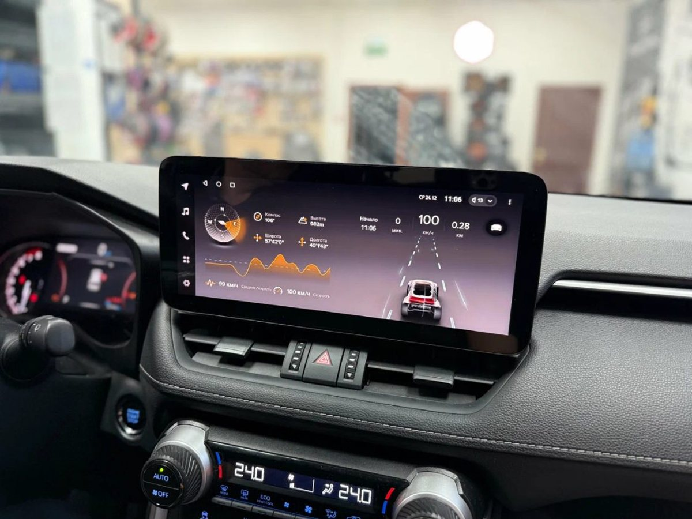
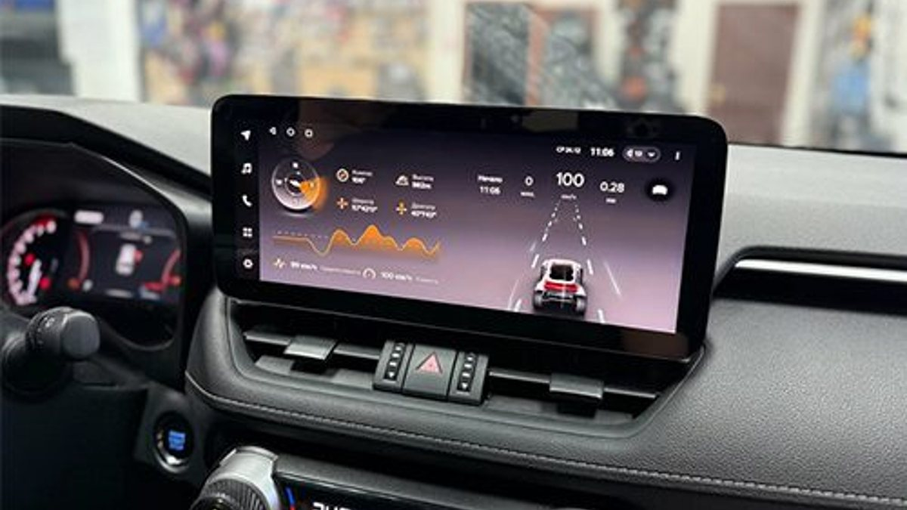
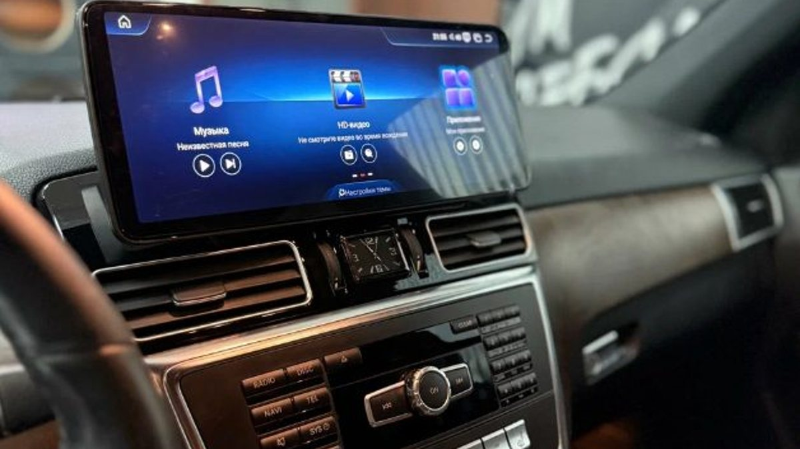

Вы спросили в чате владельцев своей машины, какую Android-магнитолу ставить, и за вечер получили двадцать ответов. Половина – «бери Teyes и не мучайся». Открываете каталог, а там несколько линеек с похожими названиями, разница в цене заметная, и непонятно, за что именно вы доплачиваете. Ноябрьский вечер уходит на сравнение таблиц, в которых через час уже рябит в глазах.
Совет из чата правильный наполовину. Название бренда – ещё не выбор. Выбор – это модель под вашу машину и ваши привычки.

Магнитол с маркетплейса без имени – море, и главная беда с ними в том, что никто не отвечает за прошивку. Купили – и живите с тем, что есть. У Teyes своя оболочка, которую развивают и обновляют, понятная линейка моделей и готовые решения под конкретные машины: рамки и переходники, чтобы сохранить штатные функции.
Вторая причина – о ней много пишут сами владельцы. Ошибки в прошивке разбирают на форумах, есть инструкции, есть у кого спросить. С безымянным устройством вы один на один с меню, переведённым с китайского.
Это не делает Teyes волшебной. Это делает её предсказуемой, а для вещи, с которой вы проведёте несколько лет за рулём, предсказуемость дорогого стоит.
Первая ловушка – сравнивать модели по цифрам: ядра, гигабайты, разрешение. В итоге вы либо берёте самую дорогую «на всякий случай», либо самую доступную, потому что разница на бумаге кажется маленькой. Обе ошибки встречаются постоянно.
Начните с трёх вопросов к себе. Первый: что вы будете делать с магнитолой каждый день? Навигатор и музыка – одна нагрузка. Навигатор, музыка, видеорегистратор, камеры и пара открытых приложений одновременно – совсем другая. Чем больше всего работает сразу, тем важнее запас памяти, иначе через полгода система начнёт задумываться.
Второй вопрос: насколько вам важен звук? В старших моделях Teyes больше возможностей настройки звука. Если вы слушаете подкасты и новости, вам это почти не нужно. Если музыка для вас – половина удовольствия от дороги, это повод смотреть выше.
Третий: какой экран нужен в вашей машине. Здесь всё решает панель. Под одни машины выпускают рамки только под определённый размер, и вопрос «какой побольше» отпадает сам.

Если коротко и без цифр. Младшие модели закрывают базу: навигатор, музыка, звонки, камера заднего вида. Средние, вроде популярной CC3, берут те, кто хочет запас по памяти и хороший звук. Новые флагманы вроде Teyes CC4 – для тех, кто нагружает магнитолу по полной и хочет больше возможностей по экрану и звуку на годы вперёд.
Не стоит брать флагман, если вам нужна только карта и радио. И не стоит экономить на памяти, если вы уже знаете, что подключите регистратор и камеры.
Магнитола Teyes – это половина результата. Вторая половина – рамка под вашу модель и правильный переходник, чтобы работали кнопки руля и всё, что было завязано на штатный блок. Сэкономили на этом – получили щели в панели и мёртвые кнопки.
И ещё одно, о чём обычно забывают, – настройка после установки: звук, камеры, автозапуск приложений. Без неё даже хорошее устройство выглядит посредственно.
Ответьте на три вопроса выше и запишите ответы вместе с маркой, моделью и годом машины. С этим уже можно предметно выбирать линейку.
Мы в Ярославле – студия «Автостиль», проспект Октября, 82б. Teyes – среди брендов, с которыми мы работаем: подберём модель под вашу машину, установим и настроим. На работы и оборудование даём гарантию. Подробнее – на странице про Android-магнитолы, телефон +7 902 220-75-55.